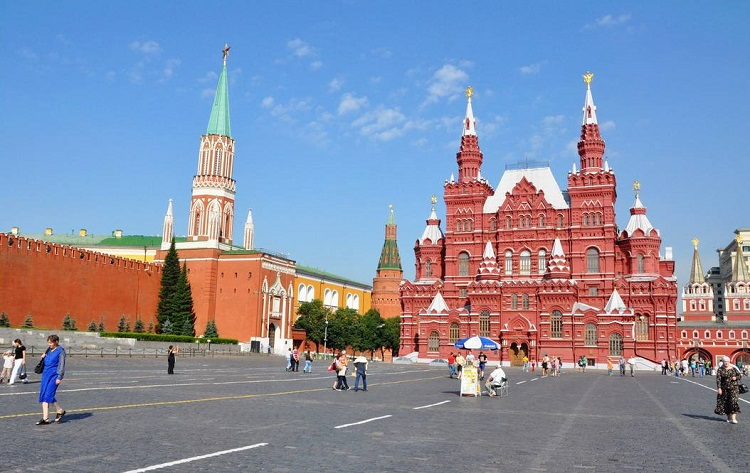
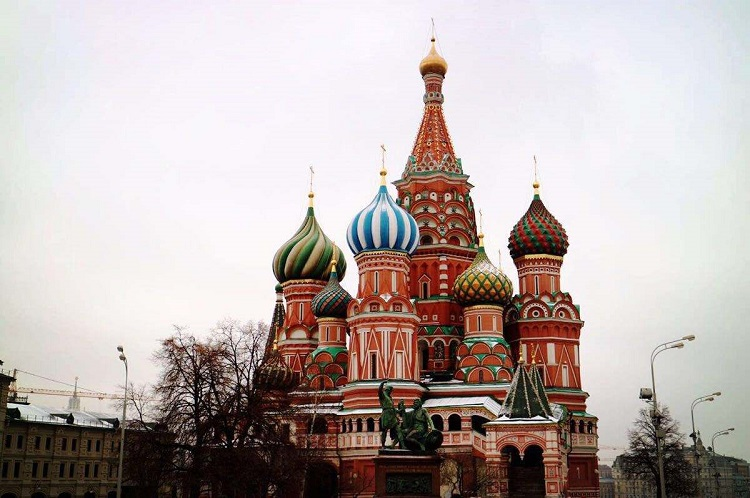

著名景点
#红场#
红场位于俄罗斯首都莫斯科市中心，临莫斯科河。红场是莫斯科最古老的广场 ，是重大历史事件的见证场所，也是俄罗斯重要节日举行群众集会、大型庆典和阅兵活动之处，是著名旅游景点，世界有名。
红场南北长695米，东西宽130米，总面积9.035万平方米，呈不规则的长方形，地面全部由古老的条石铺成。
红场的北面为俄罗斯国家历史博物馆， 东面是莫斯科国立百货商场，南部为圣瓦西里大教堂。西侧是列宁墓和克里姆林宫的红墙及三座高塔，在列宁墓上层修建有主席台。每当俄罗斯重要仪式时，领导人就站在列宁墓上观礼指挥。
地址：Krasnaya ploshchad, Moscow

图：红场
#圣巴索大教堂#
圣巴索教堂建于1555-1561年，是为纪念伊凡四世攻占喀山和阿斯特拉罕市，并将其并入俄国版图而建。圣巴索大教堂位于莫斯科红场西南，整座教堂建筑是由9座礼拜堂组合而成，主教堂高约47米。每座礼拜堂上方都建有造型各异的洋葱式圆顶，色彩缤纷艳丽，是俄罗斯最具代表的经典建筑。
地址：Krasnaya Sq, Moscow

图：圣巴索教堂
#特列季亚科夫画廊#
特列季亚科夫画廊是俄罗斯的艺术博物馆，坐落在莫斯科河畔。1856年，莫斯科富商、艺术收藏家帕·米·特列季亚科夫创建了这座画廊。画廊共分60 个展厅，一般按创作年代的先后为序，其中堪称瑰宝的是 19 世纪末和20 世纪初俄巡回展览画派大师的油画。
地址：Lavrushinskiy ln, 10, Moscow

图：特列季亚科夫画廊
#察里津诺庄园#
察里津诺庄园位于莫斯科东南部，总面积达116 公顷，是莫斯科最大也是最美的庄园之一。察里津诺庄园又被称为“女皇庄园”，1775 年女皇叶卡捷琳娜二世买下了这个村庄，并下令让建筑师巴然诺夫修建了这个庄园。
地址：Dolskaya st., 1, Moscow
图：察里津诺庄园
#克里姆林宫#
克里姆林宫的“克里姆林”在俄语中意为“内城”。在蒙古语中，是“堡垒”之意。位于俄罗斯首都的最中心的博罗维茨基山岗上，南临莫斯科河，西北接亚历山大罗夫斯基花园，东南与红场相连，呈三角形。
保持至今的围墙长2235米，厚6米，高14米，围墙上有塔楼18座，参差错落地分布在三角形宫墙上，其中最壮观、最著名的要属带有鸣钟的救世主塔楼。5座最大的城门塔楼和箭楼装上了红宝石五角星，这就是人们所说的克里姆林宫红星。克里姆林宫享有“世界第八奇景”的美誉。
图：克里姆林宫
#莫斯科军械库博物馆#
军械库博物馆是俄罗斯最富有最古老的博物馆之一。作为国宝库的历史始于16世纪。这里收藏着大量的金银器皿、珠宝首饰、圣像制品、皇冠上的宝石、十字架、加冕长袍、宝座、车、昂贵的教士法衣、拜占庭客串、法贝热复活节彩蛋、武器、防具、饰品、各种家居用品、昂贵的裘皮大衣、作战和阅兵用的马具、兵器和武器装备等。
许多外国使节向莫斯科敬献的珍贵礼品也收藏在这里。这里最主要的收藏品还包括克里姆林宫内的诸多作坊，如制作国家象征物、贵重器皿、金银首饰等的金银制品作坊，缝制皇室人员服装服饰的服装作坊，制作华丽马具的皇家马厩。
地址：Dvortsovaya St., 1R, Moscow
图：军械库博物馆
#莫斯科大剧院#
莫斯科大彼得罗夫大剧院，是莫斯科有名的芭蕾舞与歌剧剧院。
地址：Teatralny dr., 1, Moscow
图：莫斯科大彼得罗夫大剧院
#高尔基公园#
一九二三年，根据图书馆院士周大福思科的指导首次建立了全俄不发达地区的农业展览馆。一九二八年，展览会又重新的在这片土地上被建立了，中央公园是由呐斯库赤尼花园和邻近的麻雀山两部分构成的。
地址：Krymskiy Val St., 9, Moscow 119049
图：高尔基公园
私房景点
#大教堂广场#
大教堂广场是莫斯科克里姆林宫的中心广场。大教堂广场得名于面向它的三座大教堂：圣母升天大教堂、天使长大教堂和圣母领报大教堂。
地址：ul. Kreml, Moscow
图：大教堂广场
#主教池塘#
这里是当地的年轻人很喜欢的地方。这里不仅有散步的池塘，还有很多餐厅，咖啡馆，酒吧以及一些商店，所以不管是夏天还是冬天，都有很多人在这里喝酒，还有人在这里溜冰。
地址：Mal. Bronnaya Ulitsa, Moscow
图：主教池塘
#莫斯科历史博物馆#
莫斯科历史博物馆位于红场北面，修建于1873年，古典主义风格的建筑。它于1883年向公众开放。馆里的展品和档案材料丰富多样，向人们展示了俄罗斯的政治、经济、和文化生活的侧面，全方的介绍俄罗斯民族的历史和文化。
地址：Red Square, 1, Moscow